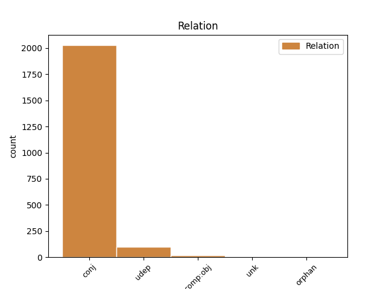
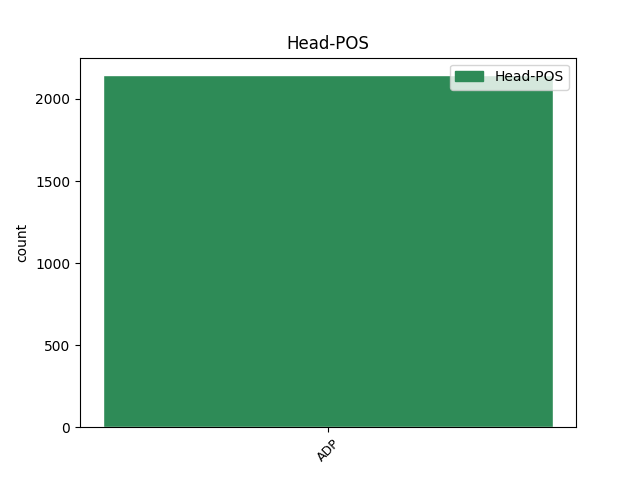
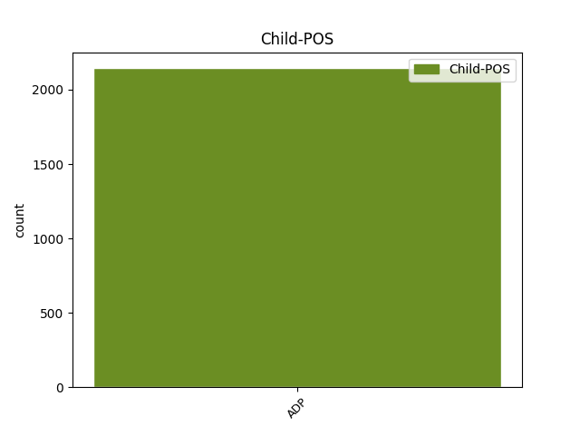

Distribution of features within this leaf



Agreement Rules sorted by frequency.
When the head token is ADP and the dependent token is ADP.
1 Jak _ _ _ _ 0 _ _ _
2 patrno _ _ _ _ 0 _ _ _
3 , _ _ _ _ 0 _ _ _
4 astronomové _ _ _ _ 0 _ _ _
5 počítají _ _ _ _ 0 _ _ _
6 s s ADP RR--7---------- AdpType=Prep|Case=Ins 0 _ _ _
7 klasickou _ _ _ _ 0 _ _ _
8 pozorovací _ _ _ _ 0 _ _ _
9 technikou _ _ _ _ 0 _ _ _
10 , _ _ _ _ 0 _ _ _
11 která _ _ _ _ 0 _ _ _
12 je _ _ _ _ 0 _ _ _
13 mimochodem _ _ _ _ 0 _ _ _
14 velmi _ _ _ _ 0 _ _ _
15 laciná _ _ _ _ 0 _ _ _
16 , _ _ _ _ 0 _ _ _
17 a _ _ _ _ 0 _ _ _
18 s s ADP RR--7---------- AdpType=Prep|Case=Ins 6 conj _ LId=s-1
19 dlouhými _ _ _ _ 0 _ _ _
20 lhůtami _ _ _ _ 0 _ _ _
21 ke _ _ _ _ 0 _ _ _
22 splnění _ _ _ _ 0 _ _ _
23 úkolu _ _ _ _ 0 _ _ _
24 . _ _ _ _ 0 _ _ _
Disagree Examples:
1 * _ _ _ _ 0 _ _ _
2 Tisk _ _ _ _ 0 _ _ _
3 přehledu _ _ _ _ 0 _ _ _
4 o _ _ _ _ 0 _ _ _
5 provedených _ _ _ _ 0 _ _ _
6 spojeních _ _ _ _ 0 _ _ _
7 po po ADP RR--6---------- AdpType=Prep|Case=Loc 0 _ _ _
8 určitém _ _ _ _ 0 _ _ _
9 počtu _ _ _ _ 0 _ _ _
10 spojení _ _ _ _ 0 _ _ _
11 , _ _ _ _ 0 _ _ _
12 za za ADP RR--4---------- AdpType=Prep|Case=Acc 7 conj _ LId=za-1
13 určitý _ _ _ _ 0 _ _ _
14 čas _ _ _ _ 0 _ _ _
15 , _ _ _ _ 0 _ _ _
16 nebo _ _ _ _ 0 _ _ _
17 na _ _ _ _ 0 _ _ _
18 požádání _ _ _ _ 0 _ _ _
19 . _ _ _ _ 0 _ _ _
1 Dlouhodobý _ _ _ _ 0 _ _ _
2 vývoj _ _ _ _ 0 _ _ _
3 však _ _ _ _ 0 _ _ _
4 bude _ _ _ _ 0 _ _ _
5 směřovat _ _ _ _ 0 _ _ _
6 ke _ _ _ _ 0 _ _ _
7 zvyšování _ _ _ _ 0 _ _ _
8 cen _ _ _ _ 0 _ _ _
9 pohonných _ _ _ _ 0 _ _ _
10 hmot _ _ _ _ 0 _ _ _
11 , _ _ _ _ 0 _ _ _
12 které _ _ _ _ 0 _ _ _
13 v _ _ _ _ 0 _ _ _
14 ČR _ _ _ _ 0 _ _ _
15 patří _ _ _ _ 0 _ _ _
16 k k ADP RR--3---------- AdpType=Prep|Case=Dat 0 _ _ _
17 nejlevnějším _ _ _ _ 0 _ _ _
18 v v ADP RR--6---------- AdpType=Prep|Case=Loc 16 udep _ LId=v-1
19 Evropě _ _ _ _ 0 _ _ _
20 . _ _ _ _ 0 _ _ _
1 Letecká _ _ _ _ 0 _ _ _
2 společnost _ _ _ _ 0 _ _ _
3 British _ _ _ _ 0 _ _ _
4 Airways _ _ _ _ 0 _ _ _
5 ( _ _ _ _ 0 _ _ _
6 BA _ _ _ _ 0 _ _ _
7 ) _ _ _ _ 0 _ _ _
8 patří _ _ _ _ 0 _ _ _
9 mezi mezi ADP RR--4---------- AdpType=Prep|Case=Acc 0 _ _ _
10 nejvýznamnější _ _ _ _ 0 _ _ _
11 a _ _ _ _ 0 _ _ _
12 nejstarší _ _ _ _ 0 _ _ _
13 na na ADP RR--6---------- AdpType=Prep|Case=Loc 9 udep _ LId=na-1
14 světě _ _ _ _ 0 _ _ _
15 . _ _ _ _ 0 _ _ _
1 Násilí _ _ _ _ 0 _ _ _
2 jako _ _ _ _ 0 _ _ _
3 metoda _ _ _ _ 0 _ _ _
4 řešení _ _ _ _ 0 _ _ _
5 takových _ _ _ _ 0 _ _ _
6 situací _ _ _ _ 0 _ _ _
7 se _ _ _ _ 0 _ _ _
8 bohužel _ _ _ _ 0 _ _ _
9 uplatňuje _ _ _ _ 0 _ _ _
10 v v ADP RR--6---------- AdpType=Prep|Case=Loc 0 _ _ _
11 podnikatelské _ _ _ _ 0 _ _ _
12 sféře _ _ _ _ 0 _ _ _
13 i _ _ _ _ 0 _ _ _
14 u u ADP RR--2---------- AdpType=Prep|Case=Gen 10 conj _ LId=u-1
15 nás _ _ _ _ 0 _ _ _
16 . _ _ _ _ 0 _ _ _
1 Zpráva _ _ _ _ 0 _ _ _
2 po _ _ _ _ 0 _ _ _
3 každém _ _ _ _ 0 _ _ _
4 přenosu _ _ _ _ 0 _ _ _
5 automaticky _ _ _ _ 0 _ _ _
6 , _ _ _ _ 0 _ _ _
7 na _ _ _ _ 0 _ _ _
8 povel _ _ _ _ 0 _ _ _
9 zpráva _ _ _ _ 0 _ _ _
10 o _ _ _ _ 0 _ _ _
11 spojeních _ _ _ _ 0 _ _ _
12 v _ _ _ _ 0 _ _ _
13 alfabetickém _ _ _ _ 0 _ _ _
14 pořadí _ _ _ _ 0 _ _ _
15 a _ _ _ _ 0 _ _ _
16 žurnál _ _ _ _ 0 _ _ _
17 po po ADP RR--6---------- AdpType=Prep|Case=Loc 0 _ _ _
18 40 _ _ _ _ 0 _ _ _
19 spojeních _ _ _ _ 0 _ _ _
20 nebo _ _ _ _ 0 _ _ _
21 na na ADP RR--4---------- AdpType=Prep|Case=Acc 17 conj _ LId=na-1
22 vyžádání _ _ _ _ 0 _ _ _
23 . _ _ _ _ 0 _ _ _